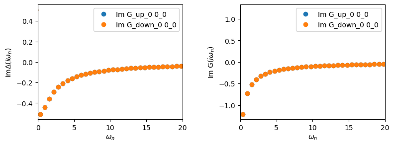
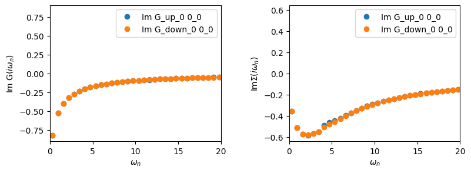

A single-band approximation for La\(_{2}\)CuO\(_{4}\): DMFT
In this tutorial, we will solve an effective one-band model for La\(_{2}\)CuO\(_{4}\) derived from first-principles within DMFT. Starting from a DFT calculation, we downfold the full band structure to a minimal correlated subspace using Wannier functions (see Tutorial 1). We include strong local correlations beyond DFT within the single-site dynamical mean-field theory (DMFT) approximation and solve the resulting interacting model self-consistently. While single-site DMFT does not capture all features of cuprate physics (e.g., momentum-dependent self-energies or pseudogap behavior), it provides a foundational framework to understand spectral-weight transfer, quasiparticle renormalization, and Mott physics in a realistic setting.
Specifically, you will learn how to construct and solve the DMFT equations using TRIQS/ModEST.
🧠 DMFT loop from scratch
We will build a single-site DMFT script for La\(_{2}\)CuO\(_{4}\) using TRIQS/ModEST.
Your main goal for this tutorial is to fill in the following Python script. No need to start filling in the script now! You will fill in the example script, by completing each of the exercises in the notebook.
# total electron density
target_density = 1.0
# create one-body elements from atomic orbitals and TB Hamiltonian (see Exercise 1)
obe =
# set up embedding (see Exercise 2)
E =
# set up self-energy Sigma = 0 (see Exercise 3)
Sigma_imp_dynamic, Sigma_imp_infty = E.make_zero_imp_self_energy(mesh)[0]
n_dmft_loops = 2
# DMFT loop
for n_iter in range(n_dmft_loops):
# embed self-energy (see Exercise 3)
Sigma_C_dynamic, Sigma_C_infty =
# find mu (see Exercise 4)
mu =
# compute the local Green's function (see Exercise 5)
Gloc =
# compute impurity levels (see Exercise 6)
hloc0 =
# compute hybridization function (see Exercise 6)
Delta_iw =
# solve impurity problem (see Exercise 8)
solver_results = solve(Delta_iw, hloc0, h_int, **solver_params)
print(f"Δn = |n_lattice - n_impurity| = {abs(Gloc.total_density()-solver_results.G_iw.total_density())}")
# update the impurity self-energy
Sigma_imp_dynamic, Sigma_imp_infty = solver_results.Sigma_dynamic, solver_results.Sigma_Hartree
Do not worry; we will proceed in stages, and we will put everything together in Exercise 9!
🧪 Exercise 0: Import TRIQS/modest
Let’s start by importing the TRIQS/modest module. Run: import triqs_modest as modest below.
[1]:
import numpy as np
import triqs_modest as modest
Warning: could not identify MPI environment!
Starting serial run at: 2026-06-28 07:49:40.723585
🧪 Exercise 1: Atomic orbitals and one-body elements
We’ll start by loading the one-body elements (or obe for short) from the Wannier90 data (lco_tb.dat in the data/mlwf/ directory), which can be produced by following Tutorial 1. Let’s use the function one_body_elements_from_wannier90 to construct the obe object.
💡Tip: If you want to see the function signature without leaving the notebook to search the API, you can write
?name_of_functionThis will print the docstring for
name_of_function.
The one-body elements object takes three arguments: - the seedname of the Wannier90 data, - the spin-kind indicating whether the Wannier90 data is spinful or spinless, - a list of AtomicOrbs
The atomic orbitals (AtomicOrbs) denote the orbital information corresponding to the Wannier functions that you have created. For your case of La\(_{2}\)CuO\(_{4}\) with a single \(d_{x^{2}-y^{2}}\) orbital, this translates to an AtomicOrbs with dimension 1 (dim=1). Since it’s a \(d\) orbital we use angular momentum \(l=2\). Finally, our Wannier function corresponds to a single Cu site, so we label this orbital with dft_idx=0 and cls_idx=0.
❓How would the AtomicOrbs change with more orbitals?
Scenario |
N orbitals |
|
|---|---|---|
Wannier function for Cu-\(d_{x^{2}-y^{2}}\) |
1 |
|
Wannier functions for Cu-\(e_{g}\) |
2 |
|
Wannier functions for Cu(\(3d\)) |
5 |
|
Wannier functions for Cu(\(3d\)), O(\(2p\)) |
17 |
|
[2]:
?modest.one_body_elements_from_wannier90
Python Library Documentation: built-in function one_body_elements_from_wannier90 in module triqs_modest.obe_tb
one_body_elements_from_wannier90(...)
Dispatched C++ function(s).
::
[1] (wannier_file_path: str,
spin_kind: str {"Polarized", "NonPolarized", "NonColinear"},
atomic_shells: [AtomicOrbs])
-> OneBodyElementsTb
[2] (wannier_file_path_up: str,
wannier_file_path_dn: str,
spin_kind: str {"Polarized", "NonPolarized", "NonColinear"},
atomic_shells: [AtomicOrbs])
-> OneBodyElementsTb
[1] Construct a one-body elements TB object from Wannier90 in the case of a single spin index.
------
[2] Construct a one-body elements TB object from Wannier90 in the case with separate spin up/spin down channels.
------
Parameters
----------
wannier_file_path : str
String to Wannier90 files, including the prefix, as in "path/to/file/seedname" to specify
a Wannier files named in the format "seedname_tb.dat".
spin_kind : str {"Polarized", "NonPolarized", "NonColinear"}
Spin kind for this calculation.
atomic_shells : [AtomicOrbs]
List of atomic shells input by the user.
wannier_file_path_up : str
String to Wannier90 files, including the prefix, for the up spin channel, as in
"path/to/file/seedname" to specify a Wannier files named in the format "seedname_tb.dat".
wannier_file_path_dn : str
String to Wannier90 files, including the prefix, for the down spin channel as in
"path/to/file/seedname" to specify a Wannier files named in the format "seedname_tb.dat"
Returns
-------
OneBodyElementsTb
One-body elements containing the Wannier90 tight binding Hamiltonian.
[3]:
wannier_file_path = "../data/mlwf/lco"
spin_kind = "NonPolarized"
atomic_orbitals = [modest.AtomicOrbs(dft_idx=0, cls_idx=0, l=2, dim=1)]
obe = modest.one_body_elements_from_wannier90(wannier_file_path, spin_kind, atomic_orbitals)
print(obe.C_space)
Local space [orbital_set]:
Total dimension [M]: 1
Number of correlated atoms: 1
Number of inequivalent correlated atoms = 1
Atomic decomposition:
dim_a: 1
a: 0
irreps: [1]
🧪 Exercise 2: Make an Embedding
Use the function make_embedding to initialize the embedding class and print it out. This function takes as an argument the local space, which is a member of obe.
💡 Tip: Remember that you can access members of a class in Python by writing
Object.method(...)orObject.property.
After printing out the Embedding, pause, and take a moment to read the output. What does it tell you? Recall that the embedding object maps the impurity self-energies back to the lattice and maps the local Green’s functions back to the impurities. For such a simple case, this mapping is one-to-one, but we will see later on that this mapping can become more complex.
[4]:
E = modest.make_embedding(obe.C_space)
print(E)
Embedding: 1 impurities
Σ_embed block decomposition:
dim_α: 1
α: 0
Impurities
Block dimensions, dim_γ for all γ:
[n_imp = 0] dim_γ = 1
γ = 0
🧪 Exercise 3: Set up an empty self-energy and embedding
Now that we have an Embedding, we can use that object to prepare our starting impurity self-energies. The embedding class has a method make_zero_imp_self_energies, which returns a list of self-energies (each decomposed into [dynamic, static] parts) given a TRIQS mesh with the data initialized to zero. Use this function to create the impurity self-energies and print them to the screen.
💡 Tip: You will be returned a list, but since we are only working with a single impurity you can capture the first element of the returned list.
As a second step, try embedding these self-energies into the larger space. You can do this using the embed method of the embedding class. It takes as arguments a list of dynamic self-energies and a list of static self-energies.
Print the embedded self-energy to the screen.
[5]:
from triqs.gfs import MeshImFreq
beta = 10.0 # inverse temperature
mesh = MeshImFreq(beta, statistic='Fermion', n_iw=251) # Matsubara mesh
Sigma_imp_dynamic, Sigma_imp_infty = E.make_zero_imp_self_energies(mesh)[0]
Sigma_imp_dynamic, Sigma_imp_infty
[5]:
(Green Function G composed of 2 blocks:
Green's Function G_up_0 with mesh Imaginary frequency mesh with beta = 10, statistics = Fermion, N_iw = 251, positive_only = false and target_shape (1, 1):
Green's Function G_down_0 with mesh Imaginary frequency mesh with beta = 10, statistics = Fermion, N_iw = 251, positive_only = false and target_shape (1, 1):
,
[array([[0.+0.j]]), array([[0.+0.j]])])
[6]:
Sigma_C_dynamic, Sigma_C_infty = E.embed([Sigma_imp_dynamic], [Sigma_imp_infty])
Sigma_C_dynamic, Sigma_C_infty
[6]:
(Green's Function composed of 2 2-index blocks:
Green's Function ('0', 'up') with mesh Imaginary frequency mesh with beta = 10, statistics = Fermion, N_iw = 251, positive_only = false and target_shape (1, 1):
Green's Function ('0', 'down') with mesh Imaginary frequency mesh with beta = 10, statistics = Fermion, N_iw = 251, positive_only = false and target_shape (1, 1):
,
array([[array([[0.+0.j]]), array([[0.+0.j]])]], dtype=object))
🧠 Think: Why do we separate the self-energy into a dynamic and a static part? The dynamic part is obviously a function of frequency, while the static part corresponds to \(\Sigma_{\infty}\) (i.e.., the value of the self-energy as \(\Sigma(\omega \rightarrow \infty)\)).
🧪 Exercise 4: Chemical Potential
Let’s find the chemical potential that corresponds to our target total electron density. For this use the function find_chemical_potential.
[7]:
opt = modest.lattice.BzIntOptions(k_grid = [7,7,7], run_adaptive=False) # k-summation options
target_density = 1.0 # total electron density
mu = modest.find_chemical_potential(target_density, obe, Sigma_C_dynamic, Sigma_C_infty, opt)
🧪 Exercise 5: Compute the local Green’s function and extract impurity quantities
Now that we have the chemical potential, we can compute the local Green’s function. Recall, the local Green’s function is generically defined as
We will use the local Green’s function below for the self-consistency condition and to construct the hybridization function, \(\Delta(i\omega_{n})\).
The local Green’s function is expressed in the larger \(\cal{C}\) space, meaning that hthe index \(m\) in the equation above runs over all localized orbitals to which electronic correlations are applied. We now want to obtain the Green’s functions corresponding to each impurity to be solved. The embedding class provides an extract method which, given a Green’s function in the \(\cal{C}\) space, returns a list of Green’s function with the appropriate block structure for the
unique impurity solver(s).
[8]:
Gloc_C = modest.gloc(obe, mu, Sigma_C_dynamic, Sigma_C_infty, opt)
print(Gloc_C)
Green's Function composed of 2 2-index blocks:
Green's Function ('0', 'up') with mesh Imaginary frequency mesh with beta = 10, statistics = Fermion, N_iw = 251, positive_only = false and target_shape (1, 1):
Green's Function ('0', 'down') with mesh Imaginary frequency mesh with beta = 10, statistics = Fermion, N_iw = 251, positive_only = false and target_shape (1, 1):
[9]:
Gloc = E.extract(Gloc_C)[0]
print(Gloc)
Green Function G composed of 2 blocks:
Green's Function G_up_0 with mesh Imaginary frequency mesh with beta = 10, statistics = Fermion, N_iw = 251, positive_only = false and target_shape (1, 1):
Green's Function G_down_0 with mesh Imaginary frequency mesh with beta = 10, statistics = Fermion, N_iw = 251, positive_only = false and target_shape (1, 1):
🧪 Exercise 6: Impurity Levels and Hybridization function
The central inputs to the impurity solver are the impurity levels (\(\varepsilon_{d}\)) and the hybridization function (\(\Delta(i\omega_{n})\)). In this exercise, you will calculate both. The impurity levels correspond to
where \(\mu\) is the chemical potential. We can compute the impurity levels with the function impurity_levels, which takes obe as an argument.
The hybridization function is defined as
where \(\mathcal{G}_{0} = \big((G_{\text{loc}})^{-1} + \Sigma\big)^{-1}\). The hybridization function can be computed using the function hybridization.
[10]:
# impurity levels in the C space - the chemical potential
hloc0_C = modest.impurity_levels(obe) - mu
# Extract the local levels
hloc0 = E.extract(hloc0_C)[0]
# compute Δ using hloc0, Gloc, and the impurity self-energy
Delta_iw = modest.hybridization(hloc0, Gloc, Sigma_imp_dynamic, Sigma_imp_infty)
🧪 Exercise 7: Plot the DFT local Green’s function and Hybridization functions
Before starting the DMFT calculation, let’s plot the local Green’s function and hybridization functions obtained from DFT.
💡Tip: Use the
oplotfunction intriqs.plot.mpl_interfacefor quick plotting.
[11]:
from triqs.plot.mpl_interface import oplot, plt
fig, ax = plt.subplots(1,2, sharex=True, figsize=(9,3))
oplot(Delta_iw.imag, 'o', axes=ax[0]); ax[0].set_ylabel(r'Im$\Delta(i\omega_{n})$')
oplot(Gloc.imag, 'o', axes=ax[1]);
ax[0].set_xlim(0,20)
plt.subplots_adjust(wspace=0.4)
plt.show()

🧪 Exercise 8: Define the interaction and solver parameters
We need to define the interaction Hamiltonian for our impurity model. For our model, this is:
Use the many-body operators within the TRIQS library to construct this interaction. Let’s take \(U\) = 3.6 eV.
💡 Tip: The many-body operators must match between all of your Green’s functions.
[12]:
from triqs.operators import n
from triqs_cthyb import solve_generic, TailFitParams
# CT-HYB (Monte Carlo) solver related parameters
solver_params = dict(length_cycle=80, n_cycles = int(1e+6), n_warmup_cycles = int(1e+3),
perform_tail_fit=True, imag_threshold = 1e-6)
# High-frequency tail post-processing (tail fitting) parameters
tail_fit_params = TailFitParams(fit_min_w=5, fit_max_w=9)
U = 3.6
h_int = U*n('up_0',0)*n('down_0',0)
🧪 Exercise 9: Write the DMFT loop
You now have all the pieces to write the DMFT self-consistency loop. Your task is to fill in the steps that occur during each DMFT iteration. This includes solving the impurity problem and updating the self-energy, chemical potential, Green’s function, and hybridization function.
🧩 Your task
Fill in the provided pseudocode to perform the following steps for each DMFT iteration:
For each iteration of the DMFT loop, do: 1. Embed the self-energy 2. Find the chemical potential 3. Compute the local Green’s function 4. Compute the impurity levels 5. Update the hybridization function 6. Solve the impurity problem 7. Update the impurity self-energy
[13]:
n_dmft_loops = 2
# DMFT loop
for n_iter in range(n_dmft_loops):
# 1. embed self-energy (see Exercise 3)
Sigma_C_dynamic, Sigma_C_infty = E.embed([Sigma_imp_dynamic], [Sigma_imp_infty])
# 2. find mu (see Exercise 4)
mu = modest.find_chemical_potential(target_density, obe, Sigma_C_dynamic, Sigma_C_infty, opt, verbosity=False)
# 3. compute the local Green's function and extract (see Exercise 5)
Gloc = E.extract(modest.gloc(obe, mu, Sigma_C_dynamic, Sigma_C_infty, opt))[0]
# 4. compute impurity levels (see Exercise 6)
hloc0 = np.real(E.extract(modest.impurity_levels(obe) - mu)[0])
# 5. compute hybridization function (see Exercise 6)
Delta_iw = modest.hybridization(hloc0, Gloc, Sigma_imp_dynamic, Sigma_imp_infty)
# 6. solve impurity problem (see Exercise 8)
solver_results = solve_generic(Delta_iw, hloc0, h_int, postprocess=tail_fit_params, **solver_params)
print(f"Δn = |n_lattice - n_impurity| = {abs(Gloc.total_density()-solver_results.G_iw.total_density())}")
# 7. update the impurity self-energy
Sigma_imp_dynamic, Sigma_imp_infty = solver_results.Sigma_dynamic, solver_results.Sigma_HartreeFock
Solving impurity problem with CT-HYB (postprocess=TailFitParams(fit_min_n=None, fit_max_n=None, fit_min_w=5, fit_max_w=9, fit_max_moment=3))
!------------------------------------------------------------------------------------!
! WARNING: Using default high-frequency tail fitting parameters in the CTHYB solver. !
! You should check that the fitting range is suitable for your calculation! !
!------------------------------------------------------------------------------------!
Root finder: seeking Chemical Potential s.t. Total Density = 1 ± 1e-05
iter | Chemical Potential interval | residual
------+--------------------------+----------
1 | [ 10.9792, 13] | 9.70e-01
2 | [ 12.6778, 13] | 1.51e-01
3 | [ 12.6778, 12.8233] | 1.87e-02
4 | [ 12.6778, 12.8073] | 1.12e-03
5 | [ 12.6778, 12.8064] | 6.35e-05
6 | [ 12.6778, 12.8063] | 3.59e-06
Converged (6 iters): Chemical Potential = 12.8063, Total Density = 1
╔╦╗╦═╗╦╔═╗ ╔═╗ ┌─┐┌┬┐┬ ┬┬ ┬┌┐
║ ╠╦╝║║═╬╗╚═╗ │ │ ├─┤└┬┘├┴┐
╩ ╩╚═╩╚═╝╚╚═╝ └─┘ ┴ ┴ ┴ ┴ └─┘
The local Hamiltonian of the problem:
0.08932*c_dag('down_0',0)*c('down_0',0) + 0.08932*c_dag('up_0',0)*c('up_0',0) + 3.6*c_dag('down_0',0)*c_dag('up_0',0)*c('up_0',0)*c('down_0',0)
Using autopartition algorithm to partition the local Hilbert space
Found 4 subspaces.
[Rank 0] Performing warmup phase...
[Rank 0] 07:49:54 100.00% done, ETA 00:00:00, cycle 1000 of 1000, 1.03e+04 cycles/sec
[Rank 0] Performing accumulation phase...
[Rank 0] 07:49:54 0.10% done, ETA 00:01:40, cycle 994 of 1000000, 9.94e+03 cycles/sec
[Rank 0] 07:49:56 2.10% done, ETA 00:01:39, cycle 20951 of 1000000, 9.86e+03 cycles/sec
[Rank 0] 07:49:59 4.61% done, ETA 00:01:36, cycle 46102 of 1000000, 9.90e+03 cycles/sec
[Rank 0] 07:50:02 7.62% done, ETA 00:01:34, cycle 76242 of 1000000, 9.75e+03 cycles/sec
[Rank 0] 07:50:06 11.49% done, ETA 00:01:30, cycle 114864 of 1000000, 9.75e+03 cycles/sec
[Rank 0] 07:50:11 16.18% done, ETA 00:01:26, cycle 161796 of 1000000, 9.68e+03 cycles/sec
[Rank 0] 07:50:17 22.17% done, ETA 00:01:20, cycle 221690 of 1000000, 9.68e+03 cycles/sec
[Rank 0] 07:50:24 29.51% done, ETA 00:01:13, cycle 295060 of 1000000, 9.63e+03 cycles/sec
[Rank 0] 07:50:34 38.72% done, ETA 00:01:03, cycle 387231 of 1000000, 9.61e+03 cycles/sec
[Rank 0] 07:50:46 50.33% done, ETA 00:00:51, cycle 503256 of 1000000, 9.61e+03 cycles/sec
[Rank 0] 07:51:01 64.90% done, ETA 00:00:36, cycle 648993 of 1000000, 9.62e+03 cycles/sec
[Rank 0] 07:51:20 83.04% done, ETA 00:00:17, cycle 830392 of 1000000, 9.62e+03 cycles/sec
[Rank 0] 07:51:38 100.00% done, ETA 00:00:00, cycle 1000000 of 1000000, 9.61e+03 cycles/sec
[Rank 0] Collect results: Waiting for all MPI processes to finish accumulating...
[Rank 0] Warmup duration: 0.0967 seconds [00:00:00]
[Rank 0] Simulation duration: 104.0356 seconds [00:01:44]
[Rank 0] Number of measures: 1000000
[Rank 0] Cycles (measures) / second: 9.61e+03
[Rank 0] Measurement durations (total = 1.3837):
[Rank 0] Measure Auto-correlation time: Duration = 0.1005
[Rank 0] Measure Average order: Duration = 0.0244
[Rank 0] Measure Average sign: Duration = 0.0228
[Rank 0] Measure Density Matrix for local static observable: Duration = 1.0792
[Rank 0] Measure G_tau measure: Duration = 0.1568
[Rank 0] Move durations (total = 98.3832):
[Rank 0] Move set Insert two operators: Duration = 16.6210
[Rank 0] Move Insert Delta_up_0: Duration = 7.6704
[Rank 0] Move Insert Delta_down_0: Duration = 7.7107
[Rank 0] Move set Remove two operators: Duration = 14.4933
[Rank 0] Move Remove Delta_up_0: Duration = 6.6440
[Rank 0] Move Remove Delta_down_0: Duration = 6.6379
[Rank 0] Move set Insert four operators: Duration = 20.3697
[Rank 0] Move Insert Delta_up_0_up_0: Duration = 5.3432
[Rank 0] Move Insert Delta_up_0_down_0: Duration = 4.1510
[Rank 0] Move Insert Delta_down_0_up_0: Duration = 4.1636
[Rank 0] Move Insert Delta_down_0_down_0: Duration = 5.3707
[Rank 0] Move set Remove four operators: Duration = 11.0545
[Rank 0] Move Remove Delta_up_0_up_0: Duration = 1.9085
[Rank 0] Move Remove Delta_up_0_down_0: Duration = 2.9734
[Rank 0] Move Remove Delta_down_0_up_0: Duration = 2.9549
[Rank 0] Move Remove Delta_down_0_down_0: Duration = 1.9142
[Rank 0] Move Shift one operator: Duration = 35.8447
[Rank 0] Move statistics:
[Rank 0] Move set Insert two operators: Proposed = 15994809, Accepted = 2302906, Rate = 0.1440
[Rank 0] Move Insert Delta_up_0: Proposed = 7996744, Accepted = 1152117, Rate = 0.1441
[Rank 0] Move Insert Delta_down_0: Proposed = 7998065, Accepted = 1150789, Rate = 0.1439
[Rank 0] Move set Remove two operators: Proposed = 15999589, Accepted = 2304062, Rate = 0.1440
[Rank 0] Move Remove Delta_up_0: Proposed = 7997972, Accepted = 1153035, Rate = 0.1442
[Rank 0] Move Remove Delta_down_0: Proposed = 8001617, Accepted = 1151027, Rate = 0.1438
[Rank 0] Move set Insert four operators: Proposed = 16002055, Accepted = 459019, Rate = 0.0287
[Rank 0] Move Insert Delta_up_0_up_0: Proposed = 3999352, Accepted = 128198, Rate = 0.0321
[Rank 0] Move Insert Delta_up_0_down_0: Proposed = 4000390, Accepted = 101159, Rate = 0.0253
[Rank 0] Move Insert Delta_down_0_up_0: Proposed = 4002648, Accepted = 101340, Rate = 0.0253
[Rank 0] Move Insert Delta_down_0_down_0: Proposed = 3999665, Accepted = 128322, Rate = 0.0321
[Rank 0] Move set Remove four operators: Proposed = 16003300, Accepted = 458441, Rate = 0.0286
[Rank 0] Move Remove Delta_up_0_up_0: Proposed = 4000919, Accepted = 127961, Rate = 0.0320
[Rank 0] Move Remove Delta_up_0_down_0: Proposed = 4000978, Accepted = 101227, Rate = 0.0253
[Rank 0] Move Remove Delta_down_0_up_0: Proposed = 4000487, Accepted = 100827, Rate = 0.0252
[Rank 0] Move Remove Delta_down_0_down_0: Proposed = 4000916, Accepted = 128426, Rate = 0.0321
[Rank 0] Move Shift one operator: Proposed = 16000247, Accepted = 11139706, Rate = 0.6962
Total number of measures: 1000000
Total cycles (measures) / second: 9.61e+03
Average sign: 1
Average order: 5.22177
Auto-correlation time: 0.954819 cycles
Δn = |n_lattice - n_impurity| = 0.48049121175663045
Solving impurity problem with CT-HYB (postprocess=TailFitParams(fit_min_n=None, fit_max_n=None, fit_min_w=5, fit_max_w=9, fit_max_moment=3))
!------------------------------------------------------------------------------------!
! WARNING: Using default high-frequency tail fitting parameters in the CTHYB solver. !
! You should check that the fitting range is suitable for your calculation! !
!------------------------------------------------------------------------------------!
╔╦╗╦═╗╦╔═╗ ╔═╗ ┌─┐┌┬┐┬ ┬┬ ┬┌┐
║ ╠╦╝║║═╬╗╚═╗ │ │ ├─┤└┬┘├┴┐
╩ ╩╚═╩╚═╝╚╚═╝ └─┘ ┴ ┴ ┴ ┴ └─┘
The local Hamiltonian of the problem:
-0.491409*c_dag('down_0',0)*c('down_0',0) + -0.491409*c_dag('up_0',0)*c('up_0',0) + 3.6*c_dag('down_0',0)*c_dag('up_0',0)*c('up_0',0)*c('down_0',0)
Using autopartition algorithm to partition the local Hilbert space
Found 4 subspaces.
[Rank 0] Performing warmup phase...
[Rank 0] 07:51:42 100.00% done, ETA 00:00:00, cycle 1000 of 1000, 1.02e+04 cycles/sec
[Rank 0] Performing accumulation phase...
[Rank 0] 07:51:43 0.10% done, ETA 00:01:38, cycle 1015 of 1000000, 1.01e+04 cycles/sec
[Rank 0] 07:51:45 2.14% done, ETA 00:01:37, cycle 21396 of 1000000, 1.01e+04 cycles/sec
[Rank 0] 07:51:47 4.70% done, ETA 00:01:34, cycle 46978 of 1000000, 1.01e+04 cycles/sec
[Rank 0] 07:51:50 7.87% done, ETA 00:01:31, cycle 78745 of 1000000, 1.01e+04 cycles/sec
[Rank 0] 07:51:54 11.91% done, ETA 00:01:27, cycle 119116 of 1000000, 1.01e+04 cycles/sec
[Rank 0] 07:51:59 17.00% done, ETA 00:01:21, cycle 169964 of 1000000, 1.02e+04 cycles/sec
[Rank 0] 07:52:05 23.28% done, ETA 00:01:15, cycle 232844 of 1000000, 1.02e+04 cycles/sec
[Rank 0] 07:52:13 31.15% done, ETA 00:01:07, cycle 311513 of 1000000, 1.02e+04 cycles/sec
[Rank 0] 07:52:23 41.00% done, ETA 00:00:57, cycle 409964 of 1000000, 1.02e+04 cycles/sec
[Rank 0] 07:52:35 53.43% done, ETA 00:00:45, cycle 534305 of 1000000, 1.02e+04 cycles/sec
[Rank 0] 07:52:50 68.95% done, ETA 00:00:30, cycle 689506 of 1000000, 1.02e+04 cycles/sec
[Rank 0] 07:53:09 87.90% done, ETA 00:00:11, cycle 879021 of 1000000, 1.02e+04 cycles/sec
[Rank 0] 07:53:21 100.00% done, ETA 00:00:00, cycle 1000000 of 1000000, 1.01e+04 cycles/sec
[Rank 0] Collect results: Waiting for all MPI processes to finish accumulating...
[Rank 0] Warmup duration: 0.0980 seconds [00:00:00]
[Rank 0] Simulation duration: 98.6785 seconds [00:01:38]
[Rank 0] Number of measures: 1000000
[Rank 0] Cycles (measures) / second: 1.01e+04
[Rank 0] Measurement durations (total = 1.3781):
[Rank 0] Measure Auto-correlation time: Duration = 0.1001
[Rank 0] Measure Average order: Duration = 0.0227
[Rank 0] Measure Average sign: Duration = 0.0238
[Rank 0] Measure Density Matrix for local static observable: Duration = 1.0790
[Rank 0] Measure G_tau measure: Duration = 0.1525
[Rank 0] Move durations (total = 93.0587):
[Rank 0] Move set Insert two operators: Duration = 16.0610
[Rank 0] Move Insert Delta_up_0: Duration = 7.3999
[Rank 0] Move Insert Delta_down_0: Duration = 7.4181
[Rank 0] Move set Remove two operators: Duration = 13.9704
[Rank 0] Move Remove Delta_up_0: Duration = 6.3630
[Rank 0] Move Remove Delta_down_0: Duration = 6.3625
[Rank 0] Move set Insert four operators: Duration = 20.1898
[Rank 0] Move Insert Delta_up_0_up_0: Duration = 5.2545
[Rank 0] Move Insert Delta_up_0_down_0: Duration = 4.1586
[Rank 0] Move Insert Delta_down_0_up_0: Duration = 4.1670
[Rank 0] Move Insert Delta_down_0_down_0: Duration = 5.2707
[Rank 0] Move set Remove four operators: Duration = 10.9678
[Rank 0] Move Remove Delta_up_0_up_0: Duration = 1.8612
[Rank 0] Move Remove Delta_up_0_down_0: Duration = 2.9696
[Rank 0] Move Remove Delta_down_0_up_0: Duration = 2.9855
[Rank 0] Move Remove Delta_down_0_down_0: Duration = 1.8164
[Rank 0] Move Shift one operator: Duration = 31.8697
[Rank 0] Move statistics:
[Rank 0] Move set Insert two operators: Proposed = 15999157, Accepted = 2119390, Rate = 0.1325
[Rank 0] Move Insert Delta_up_0: Proposed = 8001643, Accepted = 1060939, Rate = 0.1326
[Rank 0] Move Insert Delta_down_0: Proposed = 7997514, Accepted = 1058451, Rate = 0.1323
[Rank 0] Move set Remove two operators: Proposed = 15999344, Accepted = 2120053, Rate = 0.1325
[Rank 0] Move Remove Delta_up_0: Proposed = 7998389, Accepted = 1060551, Rate = 0.1326
[Rank 0] Move Remove Delta_down_0: Proposed = 8000955, Accepted = 1059502, Rate = 0.1324
[Rank 0] Move set Insert four operators: Proposed = 16002995, Accepted = 464935, Rate = 0.0291
[Rank 0] Move Insert Delta_up_0_up_0: Proposed = 3999951, Accepted = 115551, Rate = 0.0289
[Rank 0] Move Insert Delta_up_0_down_0: Proposed = 3999273, Accepted = 116669, Rate = 0.0292
[Rank 0] Move Insert Delta_down_0_up_0: Proposed = 4002375, Accepted = 116818, Rate = 0.0292
[Rank 0] Move Insert Delta_down_0_down_0: Proposed = 4001396, Accepted = 115897, Rate = 0.0290
[Rank 0] Move set Remove four operators: Proposed = 16002739, Accepted = 464603, Rate = 0.0290
[Rank 0] Move Remove Delta_up_0_up_0: Proposed = 3999552, Accepted = 115805, Rate = 0.0290
[Rank 0] Move Remove Delta_up_0_down_0: Proposed = 4000100, Accepted = 116615, Rate = 0.0292
[Rank 0] Move Remove Delta_down_0_up_0: Proposed = 4001348, Accepted = 116751, Rate = 0.0292
[Rank 0] Move Remove Delta_down_0_down_0: Proposed = 4001739, Accepted = 115432, Rate = 0.0288
[Rank 0] Move Shift one operator: Proposed = 15995765, Accepted = 9145459, Rate = 0.5717
Total number of measures: 1000000
Total cycles (measures) / second: 1.01e+04
Average sign: 1
Average order: 5.01403
Auto-correlation time: 1.34688 cycles
Δn = |n_lattice - n_impurity| = 0.24787546770143754
🧪 Exercise 10: Plot results from your DMFT iteration
Let us plot the results obtained after a couple of DMFT iterations. Specifically, let’s look at the impurity Green’s function and the impurity self-energy. The solver_results container exposes the impurity Green’s function as .G_iw and the impurity self-energy as .Sigma_iw.
💡Tip: Try using
oplotagain for making quick plots.
[14]:
fig, ax = plt.subplots(1,2, sharex=True, figsize=(9,3))
oplot(solver_results.G_iw.imag, 'o', axes=ax[0]);
oplot(solver_results.Sigma_iw.imag, 'o', axes=ax[1]); ax[1].set_ylabel(r'Im$\Sigma(i\omega_{n})$')
ax[0].set_xlim(0,20)
plt.subplots_adjust(wspace=0.4)
plt.show()

🎉 Congratulations!
You’ve just written your own DMFT script using TRIQS and TRIQS/ModEST to perform realistic DMFT calculations for materials. Next, we will learn how to post-process these results.